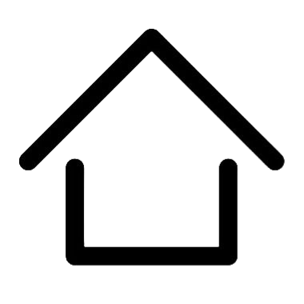

台灣的山椒魚都是冰河孑遺物種，南湖山椒魚學名的種小名”glacialis”就是「冰河」之意。上次冰河時期，全球氣溫下降，山椒魚得以分布到較南邊的緯度。當冰河時期結束後，海平面上升，淹沒亞洲大陸和台灣島間相互連結的陸橋，山椒魚無法隨著環境溫度的升高向高緯度地區撤退遷移，只好向本島高山尋找新的避難棲地，也因此與鄰近的外界地理環境隔絕，族群之間不易有接觸交流機會，產生隔離效應，進而獨立演化成為特有種。
目前山椒魚面臨的威脅，主要是適合的棲地呈現不連續狀態、全球暖化及登山客的干擾。
棲地不連續分布狀態可說是台灣的山椒魚與生俱來的宿命，因為需要棲息在低溫潮濕的環境，所以對棲地要求極高。加上地形阻隔限制，本來就不易遷徙之生物特徵，使其族群容易被分割成許多個小族群，且小族群之間難有接觸交流機會，造成近親繁殖，降低遺傳多樣性。
此外，棲地不連續也讓山椒魚對於全球暖化的適應力大幅降低。棲地之間相距過遠無法交流繁殖，只要多個棲地同時消失，幾乎就可以宣告山椒魚族群的滅亡。而全球暖化導致的降雨強度大幅提高，讓山椒魚生存的高山陵線常常遭受山崩或土石流的威脅。而全球暖化常帶來的暖冬或乾旱，也可能讓高山雪水不足以為繼，斷了山椒魚生存的命脈。
至於登山活動帶來的干擾，則是近年來才出現的問題。隨著民眾對山椒魚的認識增加，出現專門為了尋找山椒魚而上高山的活動。民眾往往在翻開石頭尋找山椒魚後，並未把石頭放回去，破壞了牠的棲地，成為山椒魚存活一大威脅。呂光洋教授表示，他在今（2018）年三月中旬去合歡山尋找山椒魚時，便看到許多石頭有明顯被翻動破壞過的痕跡。
大眾教育常是把雙面刃，若民眾增加對山椒魚的認識，明白山椒魚現在受威脅的狀況，可能會選擇不去干擾牠。然而，也可能產生像山椒魚觀賞團這樣的負面效應，反而提高山椒魚的生存威脅。
以上內容摘要自 【台灣紅皮書】稀有活化石南湖山椒魚 面臨全球暖化等世紀性挑戰
